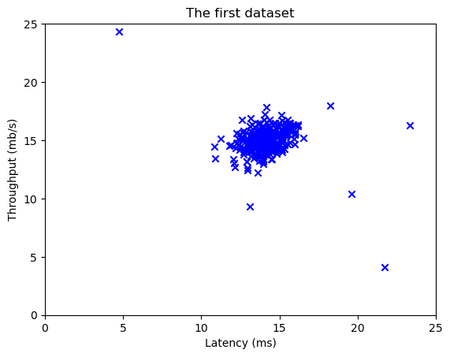
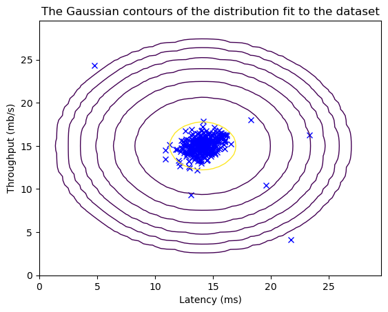
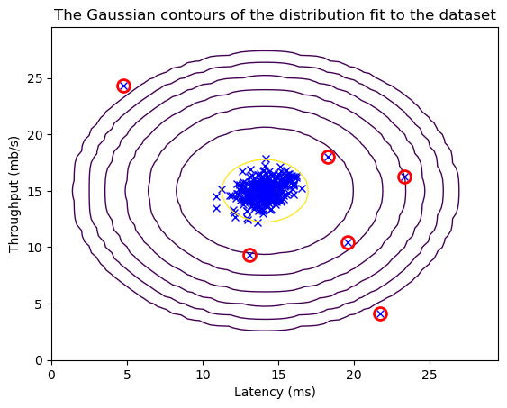

import numpy as np
import matplotlib.pyplot as pltAnomaly Detection
Anomaly Detection identifies unusual patterns or outliers in data, crucial for detecting deviations from the norm and highlighting potential irregularities or abnormalities.
Import Libraries
Dataset
X_train = np.load("data/X_train.npy")
X_test = np.load("data/X_test.npy")
y_test = np.load("data/y_test.npy")print(X_train.shape)
print(X_test.shape)
print(y_test.shape)(307, 2)
(307, 2)
(307,)plt.scatter(X_train[:, 0], X_train[:, 1], marker='x', c='b')
plt.title("The first dataset")
plt.ylabel('Throughput (mb/s)')
plt.xlabel('Latency (ms)')
plt.axis([0, 25, 0, 25])
plt.show()
Gaussian Distribution
\[ p(x ; \mu,\sigma ^2) = \frac{1}{\sqrt{2 \pi \sigma ^2}} \exp \left( - \frac{(x - \mu)^2}{2 \sigma ^2} \right) \]
\[ \text{(Univariate Gaussian Distribution)} \]
\[ p(\mathbf{x}; \boldsymbol{\mu}, \boldsymbol{\Sigma}) = \frac{1}{(2\pi)^{k/2} |\boldsymbol{\Sigma}|^{1/2}} \exp\left(-\frac{1}{2} (\mathbf{x} - \boldsymbol{\mu})^T \boldsymbol{\Sigma}^{-1} (\mathbf{x} - \boldsymbol{\mu})\right) \]
\[ \boldsymbol{\Sigma} = \begin{bmatrix} \sigma_{1}^2 & \sigma_{12} & \sigma_{13} & \ldots & \sigma_{1k} \\ \sigma_{21} & \sigma_{2}^2 & \sigma_{23} & \ldots & \sigma_{2k} \\ \sigma_{31} & \sigma_{32} & \sigma_{3}^2 & \ldots & \sigma_{3k} \\ \vdots & \vdots & \vdots & \ddots & \vdots \\ \sigma_{k1} & \sigma_{k2} & \sigma_{k3} & \ldots & \sigma_{k}^2 \\ \end{bmatrix} \]
\[ \text{(Multivariate Gaussian Distribution)} \]
def estimate_gaussian(X):
mu = np.mean(X, axis=0)
var = np.var(X, axis=0)
return mu, vardef univariate_gaussian(X, mu, var):
p = (1 / (np.sqrt(2 * np.pi * var))) * np.exp(-((X - mu) ** 2) / (2 * var))
return pdef multivariate_gaussian(X, mu, var):
k = len(mu)
if var.ndim == 1:
var = np.diag(var)
X = X - mu
p = (2 * np.pi)**(-k/2) * np.linalg.det(var)**(-0.5) * \
np.exp(-0.5 * np.sum(np.matmul(X, np.linalg.pinv(var)) * X, axis=1))
return pmu, var = estimate_gaussian(X_train)
print("mu = ", mu)
print("var = ", var)mu = [14.11222578 14.99771051]
var = [1.83263141 1.70974533]print(univariate_gaussian(X_train[246][0], mu[0], var[0]))0.28071685840987737X1, X2 = np.meshgrid(np.arange(0, 30, 0.5), np.arange(0, 30, 0.5))
Z = multivariate_gaussian(np.stack([X1.ravel(), X2.ravel()], axis=1), mu, var)
Z = Z.reshape(X1.shape)
plt.plot(X_train[:, 0], X_train[:, 1], 'bx')
plt.contour(X1, X2, Z, levels=10**(np.arange(-20., 1, 3)), linewidths=1)
plt.title("The Gaussian contours of the distribution fit to the dataset")
plt.ylabel('Throughput (mb/s)')
plt.xlabel('Latency (ms)')
plt.show()
Selecting threshold \(\epsilon\)
\[\begin{aligned} prec&=\frac{tp}{tp+fp} \\ rec &=\frac{tp}{tp+fn},\end{aligned}\] \[F_1 = \frac{2\cdot prec \cdot rec}{prec + rec}\]
def select_threshold(y_val, p_val):
best_epsilon = 0
best_F1 = 0
F1 = 0
step_size = (max(p_val) - min(p_val)) / 1000
for epsilon in np.arange(min(p_val), max(p_val), step_size):
predictions = (p_val < epsilon)
tp = np.sum((predictions == 1) & (y_val == 1))
fp = np.sum((predictions == 1) & (y_val == 0))
fn = np.sum((predictions == 0) & (y_val == 1))
prec, rec = 0, 0
if (tp+fp) != 0:
prec = (tp)/(tp+fp)
if (tp+fn) != 0:
rec = (tp)/(tp+fn)
F1 = 0
if (prec+rec) != 0:
F1 = 2*prec*rec/(prec+rec)
if F1 > best_F1:
best_F1 = F1
best_epsilon = epsilon
return best_epsilon, best_F1Finding Outliers
p = multivariate_gaussian(X_train, mu, var)
p_val = multivariate_gaussian(X_test, mu, var)
epsilon, F1 = select_threshold(y_test, p_val)
print('Best epsilon found using cross-validation: %e' % epsilon)
print('Best F1 on Cross Validation Set: %f' % F1)Best epsilon found using cross-validation: 8.990853e-05
Best F1 on Cross Validation Set: 0.875000outliers = p < epsilon
X1, X2 = np.meshgrid(np.arange(0, 30, 0.5), np.arange(0, 30, 0.5))
Z = multivariate_gaussian(np.stack([X1.ravel(), X2.ravel()], axis=1), mu, var)
Z = Z.reshape(X1.shape)
plt.plot(X_train[:, 0], X_train[:, 1], 'bx')
plt.contour(X1, X2, Z, levels=10**(np.arange(-20., 1, 3)), linewidths=1)
plt.plot(X_train[outliers, 0], X_train[outliers, 1], 'ro',
markersize=10, markerfacecolor='none', markeredgewidth=2)
plt.title("The Gaussian contours of the distribution fit to the dataset")
plt.ylabel('Throughput (mb/s)')
plt.xlabel('Latency (ms)')
plt.show()
print('# Anomalies found: %d' % sum(p < epsilon))
# Anomalies found: 6